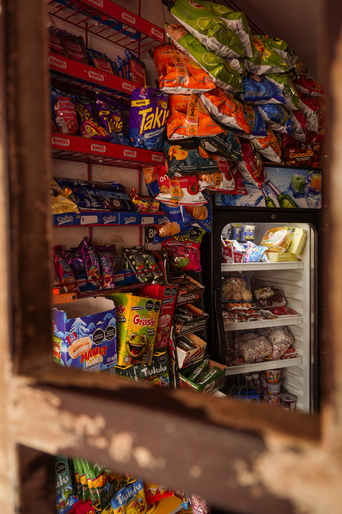
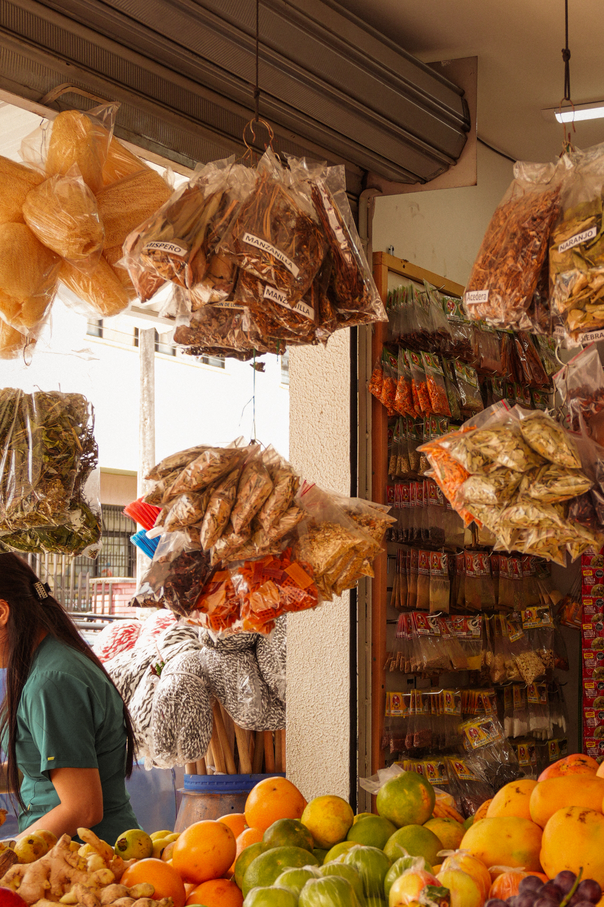
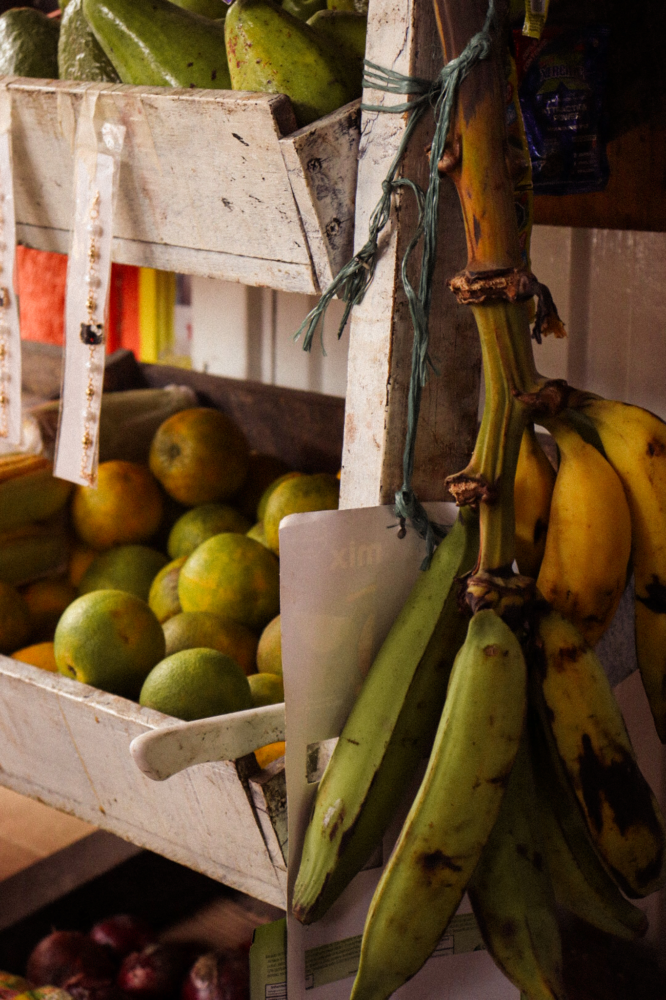

Distritodo
Calle 42 # 8a-15, Playa Rica
"Barco" es a quien pertenece la tienda que lleva más de 20 años siendo punto de encuentro en el barrio.
Ver relatoDonde los caminos se encuentran
Las tiendas no solo son un punto de llegada. Son un lugar desde donde comienzan múltiples recorridos que se extienden por el barrio. Cada tienda es parte de ese movimiento cotidiano donde los alimentos, las personas y las historias se encuentran.
Aquí encontrarás los puntos de aquellos tenderos que nos comparten su historia y dedican su día a las ventas.
Explora el mapa y entra en cada tienda. Detrás de cada ubicación hay relaciones, elecciones y momentos que se repiten todos los días, pero que rara vez se miran con atención.

Calle 42 # 8a-15, Playa Rica
"Barco" es a quien pertenece la tienda que lleva más de 20 años siendo punto de encuentro en el barrio.
Ver relato
Carrera 13 # 43-08
Aquí la confianza genera conexiones con las personas del sector, siempre ofreciendo la mejor calidad y servicio.
Ver relato
Diagonal 42 # 10A-22
Cada producto viene del campo con su historia, Don Albeiro lleva años con la tienda.
Ver relato